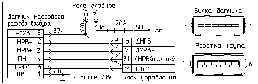

главная → коды ГАЗ
Код 253—короткое замыкание на массу цепи прожига датчика массового расхода воздуха
- Причина 1: короткое замыкание на массу цепи управления прожигом нити ДМРВ.
- Причина 2: неисправность (короткое замыкание на массу канала прожига) ДМРВ.
- Причина 3: неисправность блока управления.
- Способы проверки исправности цепи прожига нити ДМРВ.
Короткое замыкание на массу цепи управления прожигом нити ДМРВ

- Выключите зажигания, отключите датчик расхода воздуха от жгута проводов. Проверьте омметром возможность короткого замыкания цепи «31» на массу: от контакта «4» розетки датчика до металлических деталей двигателя.
- Устраните возможное короткое замыкание.
- Включите зажигание, сбросьте коды неисправности, запустите двигатель и проконтролируйте отсутствие кода неисправности «253».
Неисправность (короткое замыкание на массу канала прожига) ДМРВ
- Выключите зажигание и отключите датчик расхода воздуха от жгута проводов. Осмотрите внимательно контакты вилки розетки датчика, очистите их пинцетом от грязи и окислов.
- Проверьте омметром активное сопротивление между выводами «4» и «1» датчика—оно должно в пределах 22,5±10 кОм. Если сопротивление значительно меньше или близко к «нулю», то вероятно имеет место внутреннее замыкание цепи прожига нити датчика на его массу.
- Замените датчик расхода воздуха на заведомо исправный.
- Включите зажигание, сбросьте коды неисправности, запустите двигатель и проконтролируйте отсутствие кода неисправности «253».
Неисправность блока управления двигателем

- Отсоедините блок управления от жгута проводов и внимательно осмотрите целостность контактов розетки жгута и вилки блока.
При необходимости отрихтуйте контакты соединителя или замените их. При обнаружении воды в соединителе блок необходимо снять, остатки
воды удалить, просушить блок при температуре не выше 85°C
- Подключите к системе контрольный блок управления. Обратите внимание! Тип и обозначение исполнения контрольного блока
должны совпадать с тестируемым блоком. Для этого сравните паспортные данные блоков в процедуре «Паспорт».
- После замены тестируемого блока на контрольный включите зажигание, запустите двигатель и проконтролируйте отсутствие кода неисправности «253».
- Если код «253» не регистрируется на контрольном блоке, то замените тестируемый блок на исправный.
Способы проверки исправности цепи прожига нити ДМРВ
- Отключите зажигание и отсоедините датчик расхода воздуха от жгута проводов.
- Включите зажигание, сбросьте коды неисправности и через 10 секунд проверьте наличие кода неисправности:
- если по-прежнему фиксируется код «253»—неисправен блок управления или жгут проводов;
- если фиксируется код «252»—неисправен датчик расхода воздуха (внутреннее замыкание канала прожига нити на массу).
- При наличии кода «253» подключите датчик расхода воздуха к жгуту проводов. Подключите вместо тестируемого блока управления контрольный блок.
Включите зажигание и сбросьте коды неисправности. Если через 10 секунд по-прежнему фиксируется код «253»—неисправен жгут проводов.
|